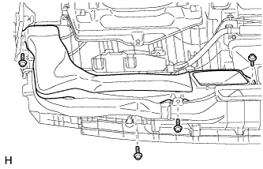
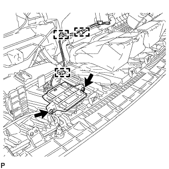

NAVIGATION ANTENNA > REMOVAL |
| 1. DISCONNECT CABLE FROM NEGATIVE BATTERY TERMINAL |
| Condition | Waiting Time |
| Vehicle enrolled in G-BOOK system | 6 minutes |
| Vehicle not enrolled in G-BOOK system | 1 minute |
| 2. REMOVE INSTRUMENT PANEL SAFETY PAD SUB-ASSEMBLY |
Remove the instrument panel safety pad sub-assembly (Click here).
| 3. REMOVE NO. 1 HEATER TO REGISTER DUCT |
|  |
Remove the 4 screws <A> and No. 1 heater to register duct.
| 4. REMOVE NO. 2 HEATER TO REGISTER DUCT |
| 5. REMOVE NO. 1 SIDE DEFROSTER NOZZLE DUCT |
 |
Remove the screw <A>.
Detach the 2 claws and remove the No. 1 side defroster nozzle duct.
| 6. REMOVE NO. 2 SIDE DEFROSTER NOZZLE DUCT |
| 7. REMOVE DEFROSTER NOZZLE ASSEMBLY |
 |
Remove the 4 screws <A> and defroster nozzle.
| 8. REMOVE NAVIGATION ANTENNA ASSEMBLY |
|  |
Detach the 3 clamps.
Remove the 2 screws and navigation antenna.